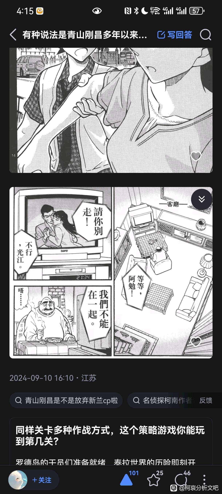
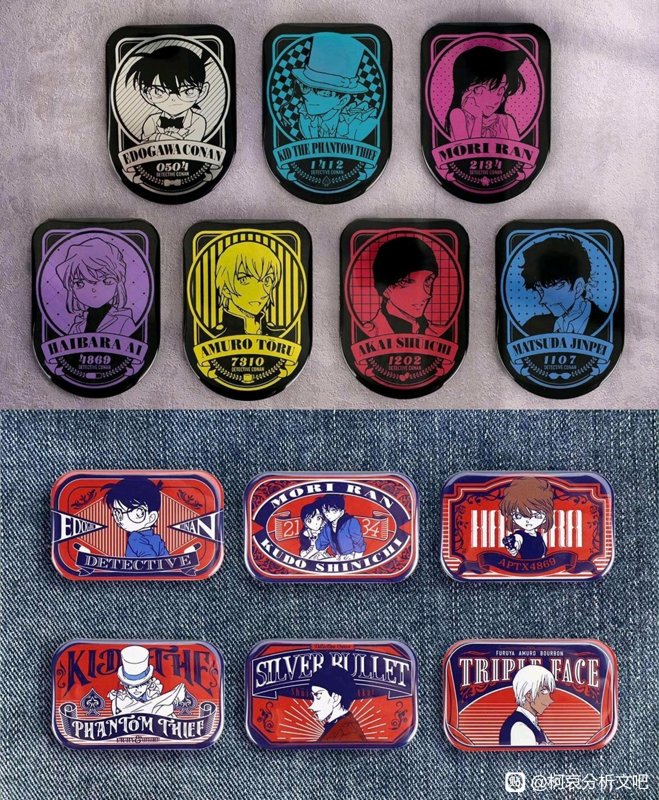
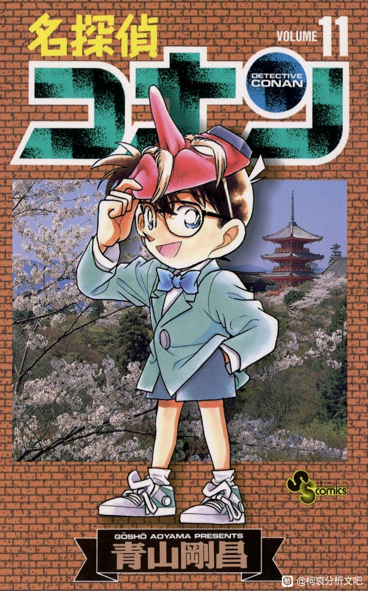

以下内容是从知乎看到后，感觉非常震惊，所以搬运过来的，版权完全属于原作者。
其中，图1图2为原回答，图3是对暴风雪杀人案件的位置说明，图4图5图6是大本钟21：34进一步的对照关系。
那一句不行，我们不能在一起好像就是当时新一内心的真实写照。
其中，图1图2为原回答，图3是对暴风雪杀人案件的位置说明，图4图5图6是大本钟21：34进一步的对照关系。
那一句不行，我们不能在一起好像就是当时新一内心的真实写照。


这个图 之前在b站还是哪里也见过
老贼：偷偷藏不住，嘿嘿
这么细啊73
这真的是巧合吗，我惊呆了
2024-09-13 20:44 | alynchang:这个说巧合我是不信的2024-09-13 20:46 | 11AA114:，四个数完全一样
回复 alynchang :不过yysy，兰/新兰的周边经常用2134也可能是周边商挑伦敦告白时间当新兰糖2024-09-13 21:13 | alynchang:回复 11AA114 :后面那个周边确实不太重要，重要的是第十卷就出现了2134，而且电视剧里的台词正好就是“不行，我们不能在一起”
啊？！
 。这太牛了
。这太牛了
。这太牛了
2024-09-21 21:17 | 贴吧用户_7PX2yAy:这个毛露露好像老妈子。。。祥林嫂呢
这么细节，这么巧合的
嗯？好像有东西
列文虎克再世了
这个文吧真有人提到过，没记错应该是折叠时空，那个系列是全文不论主线日常全部通读串联的超级导读，基本上可以说是细节层面T0的超长篇
xhs上有人发帖说这个事了，下面一群sr认为是sr糖，说新一和兰不畏艰难险阻也要在一起
2024-09-14 14:45 | alynchang:这里的电视剧叫《爱是一切》，我觉得更多的是一种贬义。当情感因素比重上升，甚至达到了“一切”的程度，推理变得不再理性，甚至有一种脱离客观实际的感觉。就像女主大喊“不行，你不能离开我”以及伦敦篇中柯南中途放弃破案后的双人追逐戏码。2024-09-14 15:13 | 贴吧用户_0DeXCya:同一个事双方都能磕到的太多了，我感觉最典型的就是饱含心意的手机挂件那篇，其实也正常，一个本来作者存心两边端水or搞什么恋爱推理，一个一千个人眼中有一千个哈姆雷特，本质就是不同的两群人在磕2024-09-14 15:13 | 贴吧用户_0DeXCya:回复 贴吧用户_0DeXCya :有点歧义，就是同一个事双方理解不一样2024-09-14 15:26 | alynchang:回复 alynchang :是的，这个《爱是一切》和“不行，我们不能在一起”也可以理解成新兰的糖，不过我看来实在是有些牵强

难得他真的是天才....
难他天？
青山说是他在伦敦取材时拍的大本钟照片上的时间
《Otona Fami》2013年6月号，由青山刚昌挑选出角色们光彩夺目的瞬间！
あと最近だと『ホームズの黙示録」の蘭への告白シーン。これは新一のベストになるのかな？イギリス取材に行った際、告白は絶対ビッグベンの前でと決めました。やっぱり絵になるでしょ？時計の時刻も僕が実際に写真を撮った時刻と同じ。
《Otona Fami》2013年6月号，由青山刚昌挑选出角色们光彩夺目的瞬间！
あと最近だと『ホームズの黙示録」の蘭への告白シーン。これは新一のベストになるのかな？イギリス取材に行った際、告白は絶対ビッグベンの前でと決めました。やっぱり絵になるでしょ？時計の時刻も僕が実際に写真を撮った時刻と同じ。
2024-09-14 15:29 | alynchang:确实，在画第十卷的时候，莫名其妙画了个2134上去，之后在伦敦取材，不小心又拍到了2134的大本钟。要是说在画第十卷之前就想好了伦敦篇并且去伦敦取材，我就相信这种说法2024-09-15 15:35 | 虬空:回复 alynchang :96年出第十卷的时候心里已经盘算到十几年后的72卷了？那我不得不叫一声刚圣了2024-09-15 22:33 | alynchang:回复 虬空 :其实似乎连红修篇的大概框架可能都构思好了，清水寺、天狗传说、离别2024-09-15 22:42 | 贴吧用户_016eQC6:回复 虬空 :从现在日常剧情夹带主线的画法，可能主线架构一开始就不是很大，所以后期的一些东西除非严重过时，否则真有可能是一开始就规划好的2024-09-15 23:56 | 平成艾琳🍒:回复 虬空 :毕竟有些故事是一定要画的

老贼：你猜
细思极恐，难道他真的是个天才
我作为可能是第一发现的人竟然觉得比我分析的还合理 ，开玩笑的，其实我原八月的帖子就是讲了这个，然后现在看我那个结论错的挺完全的，然后我后面对这个2134的分析和这里差不多（笑）
，开玩笑的，其实我原八月的帖子就是讲了这个，然后现在看我那个结论错的挺完全的，然后我后面对这个2134的分析和这里差不多（笑）
，开玩笑的，其实我原八月的帖子就是讲了这个，然后现在看我那个结论错的挺完全的，然后我后面对这个2134的分析和这里差不多（笑）1、这里的电视剧和伦敦篇有一种对比关系。在该电视剧中，是女方挽留男方；而在伦敦篇中，是新一追逐并挽留小兰。但是实际上，新一是迫于无奈的被动追逐，也就是说，其实新一才是真正的被挽留方，而小兰才是真正的追逐方，这里的挽留和追逐是一种情感意义上的表达。在两人的这段关系中，小兰一直对新一紧追不舍，而新一从一开始的双向奔赴到后期变得有些无暇应对，好像就印证了那句“不行，我们不能在一起”，有一种刻意保持距离的感觉。
2024-09-15 13:23 | alynchang:这种关系的异味感，就好像那颗草莓甜蜜中混杂的一些苦涩和酸甜。
2、第二个比较关键的问题就是该电视剧的名字叫《爱是一切》，并且还特意给出了21：34的电视剧镜头，其实严格来说有两种理解方式。第一种理解方式：新兰之间的爱是永恒的，而两人之间的挫折“不行，我们不能在一起”只是暂时的，最终还是会团聚，但是本人觉得这种理解方式实在是有些牵强。第二种理解方式：“爱”是一种超越理性的情感要素，同时“一切”又过于极端，当爱成为一切的时候，理性的推理变得不再理性，两个人的关系出现一种穷追猛打的异味，正如电视剧中女主大喊“不行，你不能走”以及伦敦篇中柯南被迫放弃破案两个人的追逐戏码。
3、这个电视剧其实可以看作是伦敦篇的伏笔，无论是时间还是剧情基本都完全一致，那么就衍生出来一个比较关键的问题，这些后期的重要篇章是否基本框架在前期就已经成型了，对于伦敦篇来说，我认为这个说法是正确的。
伦敦篇的前期对应案件是暴雪山庄杀人案件，该案件共分三话，两话在第十卷，一话在第十一卷，其实只要我们再多观察下第十一卷的案件，就能发现更为惊人的结论。
第十一卷的最后一个案件是雾天狗传说杀人事件，主要讲的是毛利一行人因下雨投宿到山泥寺之后的故事。与红修篇相似，该事件中同样有一个关于天狗的传说，并且三人投宿的山泥庙似乎就是以清水寺为原型，两者的建筑风格和构造非常相似。

红修篇的天狗传说中，仓之介和新一的对照关系已经是老生常谈了，相似的情感关系，相似的分别，相似的清水舞台接吻。当我们把视角转向漫画日文版的第十一卷封面，就能发现几乎是实锤一样的明示：仓之介因妻子摘下了八角金盘叶子而变成了天狗，导致两人不得不永久分开，而在新兰这段关系中，天狗面具下的人正是柯南。

此外，第十一卷封面的背景正是清水寺，那个仓之介纵身一跃而下的清水寺；那个在浓红之时，仓之介与妻子吻别的清水寺；那个印证着仓之介和妻子分离的清水寺；当然，也正是新兰世纪之吻的清水寺。
所以，无论是伦敦篇还是红修篇的剧情和基本要素，在前期篇章中我们都可以窥见一二，甚至可以作出结论，一些重要篇章的基本框架，在漫画早期就已经形成了，后面要做的无非就是时间节点的安排以及细节的优化。
可以啊
 太厉害了
太厉害了2024-09-16 11:37 | alynchang:感谢

我靠分毫不差
不信这是巧合
这也太细节了卧槽